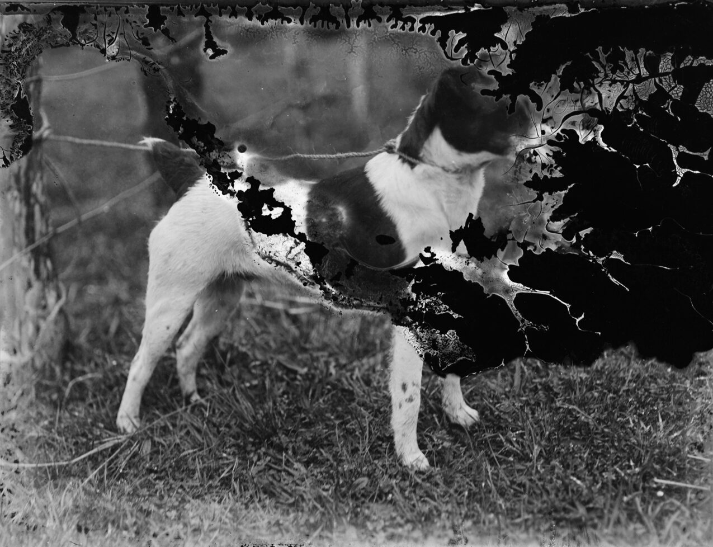

image-segmentation · vision · MediaPipe · ~2.8 MB
Google's MediaPipe Image Segmenter (a DeepLab v3+ trained on PASCAL VOC 2012) labels
every pixel of a photo with one of 21 classes — person, dog,
cat, car, bicycle, chair, TV… — and returns a category mask plus a confidence mask per class.
It's a real .tflite model that runs on-device via WebAssembly (with a GPU
delegate when available). Pick a photo and watch the mask appear.
| Model | MediaPipe Image Segmenter — DeepLab v3+ (Google) |
|---|---|
| Runtime | MediaPipe Tasks Vision (@mediapipe/tasks-vision) — official .tflite bundle |
| Output | Category mask (one class index per pixel) + 21 float confidence masks + label map |
| Classes | 21 PASCAL VOC 2012 classes (background + 20 object/animal/person classes) |
| Delegate | GPU when a WebGPU/WebGL adapter exists, otherwise CPU (XNNPACK) |
| Download | ~2.8 MB deeplab_v3.tflite, cached by the browser after first load |
| License | Apache-2.0 (Google MediaPipe) |
| Web APIs | WebAssembly, Canvas — all Baseline widely available |
Pick a sample photo or drop your own. The model labels each pixel; the legend lists every class found with its coverage and mean confidence.

Coverage = share of pixels labelled with that class; conf = the model's mean confidence over those pixels (from the per-class confidence masks).
Segment an image to see its class legend.
The model returns a category mask (one byte per pixel: the winning class index)
and a confidence mask per class (one float per pixel per class). The table below
is computed from exactly those arrays for the current image — pixel counts per class, share of the
frame, and mean confidence. The label map comes from the model bundle itself
(getLabels()).
| class | pixels | coverage | mean conf |
|---|
Semantic segmentation — "which object is each pixel part of?" — used to mean a server-side vision API. This 2.8 MB model turns it into a local function call in any browser: private, offline, fast enough for interactive editing. Unlike promptable segmenters (SAM) you get a named class for every region in one pass, so apps can act on "the person" or "the TV" without any clicking.
MediaPipe Tasks loads the official .tflite model and gives you a segmenter you call per image:
import { FilesetResolver, ImageSegmenter } from "@mediapipe/tasks-vision";
const vision = await FilesetResolver.forVisionTasks(".../wasm");
const segmenter = await ImageSegmenter.createFromOptions(vision, {
baseOptions: {
modelAssetPath: ".../deeplab_v3.tflite", // ~2.8 MB, 21 VOC classes
delegate: "GPU", // or "CPU"
},
runningMode: "IMAGE", // or "VIDEO"
outputCategoryMask: true, // one class index per pixel
outputConfidenceMasks: true, // one float mask per class
});
const result = segmenter.segment(imageElement);
// result.categoryMask.getAsUint8Array() → Uint8Array, class index per pixel
// result.confidenceMasks[i] → float mask for class i
// segmenter.getLabels() → the bundle's label map (21 VOC names)This page runs the segmenter in a Web Worker through the showcase's shared auto-init loader; the main thread only colorizes the returned mask. Inference uses the WASM/CPU delegate here (a GPU delegate is used automatically when a real adapter exists).